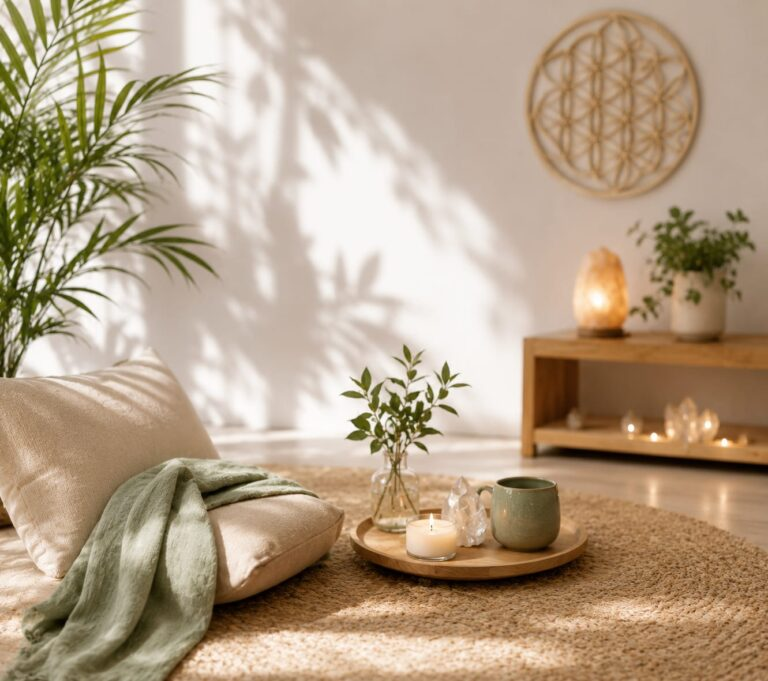

01
Áudios diários
Mensagens guiadas para presença, regulação emocional e um recorte de silêncio no meio do dia.

Comunidade
Um grupo de apoio para não atravessar sozinha o excesso da vida. Áudios diários, presença compartilhada e um ritmo de cuidado que cabe na sua rotina.
Pertencimento
O clube existe para quem sustenta muitos papéis — mãe, profissional, filha, líder, cuidadora — e precisa de um espaço em que não seja cobrada a “dar conta de tudo”.
Cada dia, um áudio chega como um convite: respirar, nomear o que sente e voltar ao corpo antes de seguir.

O dia a dia
Mensagens guiadas para presença, regulação emocional e um recorte de silêncio no meio do dia.
Um círculo de mulheres que se escutam com respeito. Sem comparação, sem performance, com acolhimento real.
Você participa no seu tempo. O clube acompanha a vida — não exige mais uma lista de tarefas.
Para quem é
Vozes do círculo
“Os áudios me pegam no caminho do trabalho. Cinco minutos e eu chego diferente em casa.”
Fernanda S. · gestora
“Pela primeira vez senti que não precisava explicar demais o cansaço. Alguém já entendia.”
Camila R. · professora
“O clube não pediu que eu fosse outra. Pediu que eu voltasse a mim.”
Juliana A. · empreendedora
Dúvidas
Seu lugar no círculo
Escreva para nós. Vamos te receber com escuta e combinar o melhor momento para começar.